Module 13 — Scripting in Graphics | Pages 713-734
Lab 26 – Using the ShowContent() Function
AVEVA™ Operations Management Interface 2023
Lab 26 – Using the ShowContent() Function
Introduction
In this lab, you will create a ViewApp namespace and add custom attributes to it. The attributes will
be used in layout scripts to indicate if a layout is displayed in the ViewApp.
You will also create a symbol with buttons that are configured with animations and scripts to show
content or close content in the tabbed pane at runtime.
Then you will update the Main layout with a right slide-in pane, and add the symbol to it.
When testing your ViewApp, you will open the right slide-in pane, click the buttons, and see the
effect on the tabs in the bottom-left pane of the ViewApp.
Content workflow highlight: Showing content using the ShowContent() script function
Objectives
Upon completion of this lab, you will be able to:
Use ShowContent() function to show content in a specific pane
Use HideContent() function to close the shown content in a specific pane
Use the Layout Predefined scripts
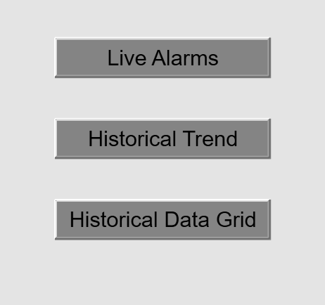
Module 13 – Scripting in Graphics
AVEVA™ Training
Create a ViewApp Namespace
In the following steps, you will create a new ViewApp namespace and add several attributes to it.
1.
On the Graphics tab, in the Training \ ViewApp Namespaces toolset, create a new ViewApp
namespace and name it ContentStatus.
2.
Double-click ContentStatus to open it in the ViewApp Namespace Editor.
3.
Add the following attributes and leave their configurations as default:
HistDataGrid_Displayed
LiveAlarms_Displayed
HistTrend_Displayed
4.
Save and close the ContentStatus ViewApp namespace, and check it in.
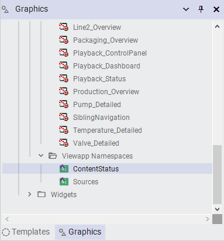
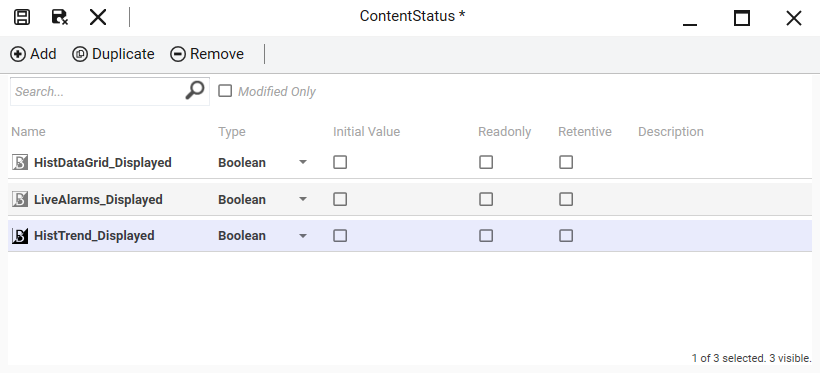
Lab 26 – Using the ShowContent() Function
AVEVA™ Operations Management Interface 2023
Configure Layout Scripts
In the following steps, you will configure layout scripts for the LiveAlarms, HistoricalTrend, and
HistoricalDataGrid layouts in the Layout Editor. You will configure the On Show and On Hide
scripts to set attributes to True or False based on the status of the layout at runtime.
5.
On the Graphics tab, in the Training \ Layouts toolset, double-click LiveAlarms to open it in
the Layout Editor.
6.
At the top-left of the Layout Editor, click Script.
The Script view of the Layout Editor displays.
Notice there are three predefined scripts: On Show, While Showing, and On Hide.
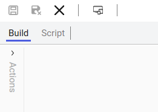
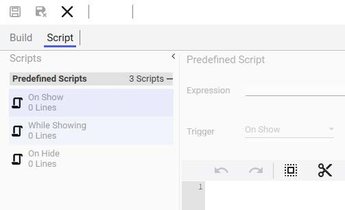
Module 13 – Scripting in Graphics
AVEVA™ Training
7.
For the On Show script, in the script body, enter the following script:
For convenience, a text file is available in the C:\Training folder that includes all the
scripts you will use in this lab. The name of the file is Lab 26 - Using the ShowContent()
Function.txt. The file contains multiple scripts, so be sure to copy the appropriate script.
'Script body begins...
'When the layout is shown, set the ContentStatus.LiveAlarms_Displayed
attribute to true.
MyViewApp.ContentStatus.LiveAlarms_Displayed = true;
'Script body ends.
8.
For the On Hide script, in the script body, enter the following script:
You can find the corresponding script in the Lab 26 - Using the ShowContent()
Function.txt file.
'Script body begins...
'When the layout is hidden, set the
ContentStatus.LiveAlarms_Displayed attribute to false.
MyViewApp.ContentStatus.LiveAlarms_Displayed = false;
'Script body ends.
9.
Save and close the LiveAlarms layout, and check it in.
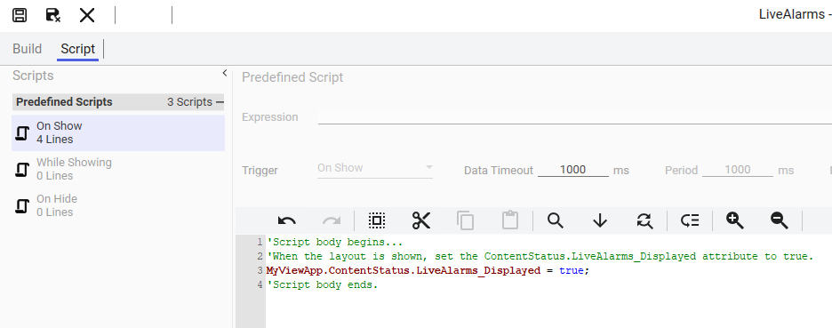
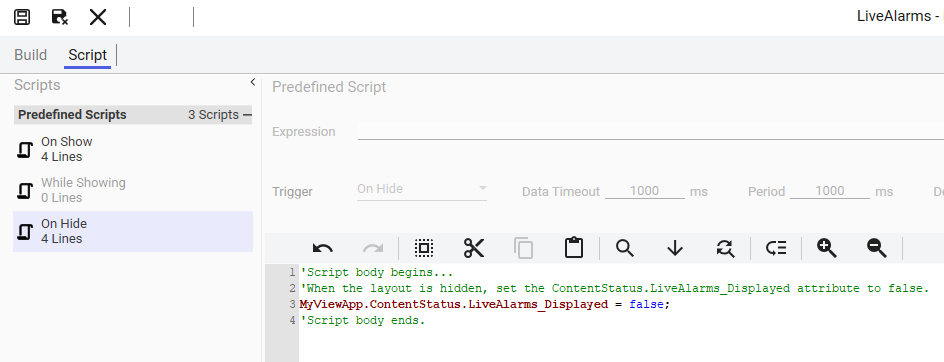
Lab 26 – Using the ShowContent() Function
AVEVA™ Operations Management Interface 2023
10. Repeat Steps 5 - 9 to add On Show and On Hide scripts to the HistoricalTrend layout.
You can find the corresponding scripts in the Lab 26 - Using the ShowContent()
Function.txt file.
The following shows the On Show script for the HistoricalTrend layout:
The following shows the On Hide script for the HistoricalTrend layout:
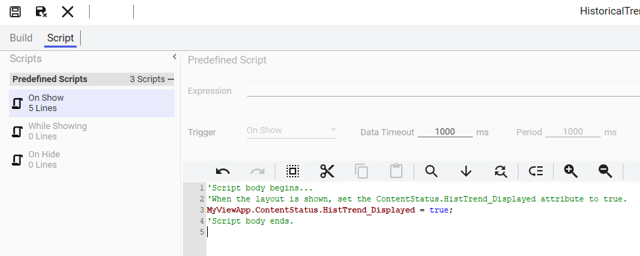
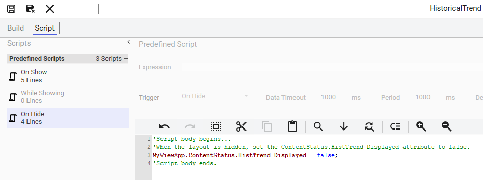
Module 13 – Scripting in Graphics
AVEVA™ Training
11. Repeat Steps 5 - 9 to On Show and On Hide scripts to the HistoricalDataGrid layout.
You can find the corresponding scripts in the Lab 26 - Using the ShowContent()
Function.txt file.
The following shows the On Show script for the HistoricalDataGrid layout:
The following shows the On Hide script for the HistoricalDataGrid layout:
Create a Symbol to Show or Hide Content
In the following steps, you will create a common symbol and configure it to show or hide content.
In later steps, you will create another symbol based on this common symbol to show or hide the
LiveAlarms, HistoricalTrend, and HistoricalDataGrid layouts in the ViewApp.
12. On the Graphics tab, in the Training \ Symbols toolset, create a new symbol and name it
ShowContentButton.
13. Double-click ShowContentButton to open it in the Graphic Editor.
14. Right-click the drawing canvas and select Custom Properties.
The Edit Custom Properties dialog box appears.
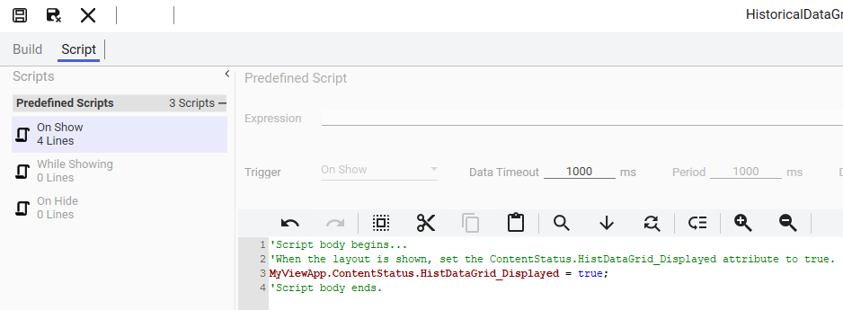
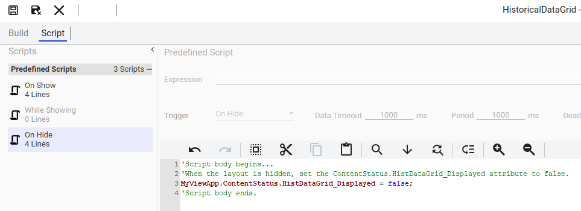
Lab 26 – Using the ShowContent() Function
AVEVA™ Operations Management Interface 2023
15. In the Edit Custom Properties dialog box, create the following custom properties:
16. Click OK to close the Edit Custom Properties dialog box.
17. Add a button element to the drawing canvas and enter Show Content for the text.
The name of the button element is Button1.
Name
Data Type
Default Value
Visibility
ContentDisplayed
Boolean (default)
False (default)
Public (default)
ContentName
String
(Leave blank)
Public (default)
PaneName
String
(Leave blank)
Public (default)
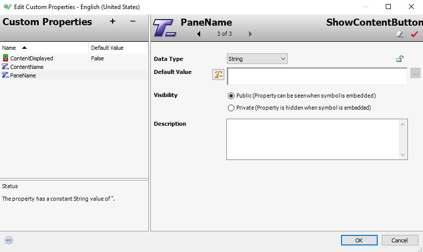
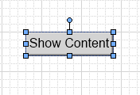
Module 13 – Scripting in Graphics
AVEVA™ Training
18. Double-click Button1 and add an Action Scripts animation.
19. For Trigger type, ensure On Left/Key/Touch Up is selected.
20. For the script body, enter the following script:
You can find the corresponding script in the Lab 26 - Using the ShowContent()
Function.txt file.
'Script body begins...
'Show the target content ShowContent() function.
Dim contentInfo as aaContent.ContentInfo;
contentInfo.Content = ContentName;
contentInfo.PaneName = PaneName;
'If the content is not yet displayed, then show it in the specified
pane. Otherwise, hide the content.
if not ContentDisplayed then
ShowContent( contentInfo );
else
HideContent( contentInfo );
endif;
'Script body ends.
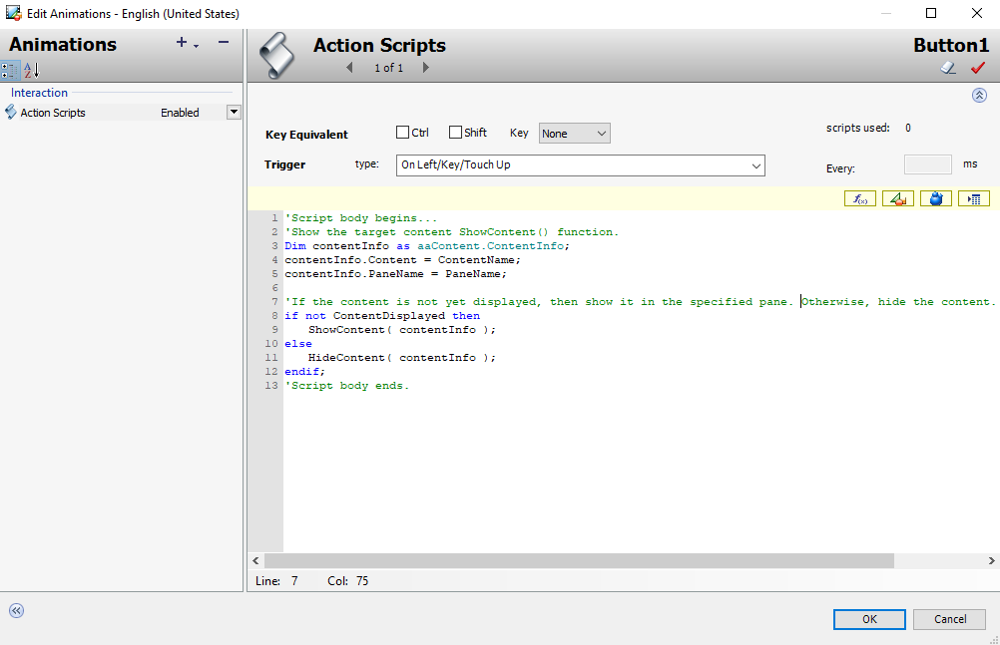
Lab 26 – Using the ShowContent() Function
AVEVA™ Operations Management Interface 2023
21. Add an Element Style animation to Button1 as follows:
22. Click OK to close the Edit Animations dialog box.
23. Save and close the ShowContentButton symbol, and check it in.
Create Another Symbol
Next, you will create another symbol with three Show Content buttons and configure them to show
corresponding content in the tabbed pane.
24. On the Graphics tab, in the Training \ Symbols toolset, create a new symbol and name it
AdditionalTools.
25. Double-click AdditionalTools to open it in the Graphic Editor.
States:
Boolean
Expression Or Reference (Boolean):
ContentDisplayed
Values: True, 1, On:
Element Style checked (default)
Active selected
Values: False, 0, Off:
Element Style checked (default)
Passive selected
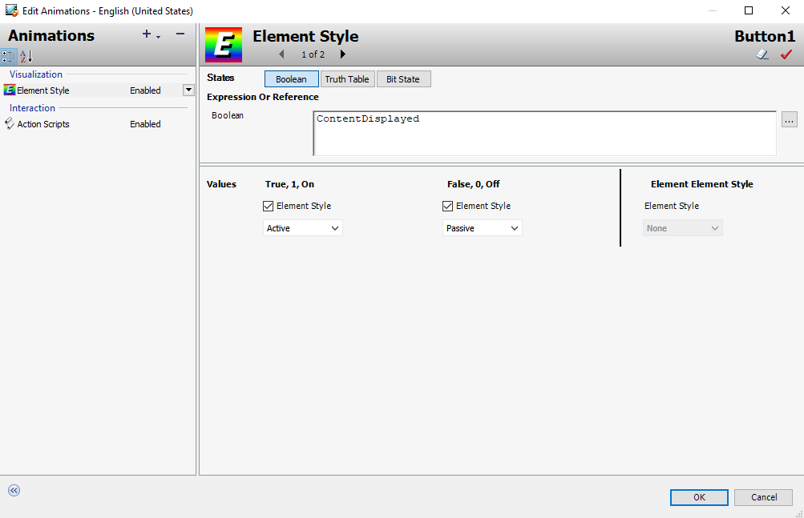
Module 13 – Scripting in Graphics
AVEVA™ Training
26. On the Toolbox tab, enter a search string to find the ShowContentButton symbol, and drag it
to the canvas.
The name of the button on the canvas is ShowContentButton1.
27. Right-click ShowContentButton1 and select Substitute | Substitute Strings.
The Substitute Strings dialog box appears.
28. In the New field, enter Live Alarms.
29. Click OK to close the Substitute Strings dialog box.
The ShowContentButton1 button on the canvas changes as shown below.
If needed, you can adjust the width of ShowContentButton1 so that the text fits on
the button.
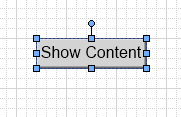
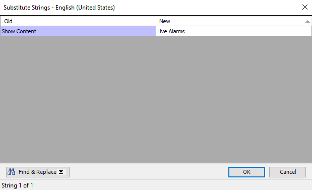
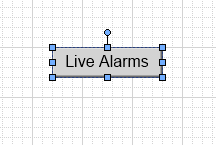
Lab 26 – Using the ShowContent() Function
AVEVA™ Operations Management Interface 2023
30. Right-click ShowContentButton1 and select Custom Properties.
31. Modify the custom properties as follows:
PaneName must be the name of the tabbed pane in the bottom-left of the Main
layout. If needed, you can open the Main layout to confirm the name of that pane.
32. Click OK to close the Edit Custom Properties dialog box.
33. Duplicate ShowContentButton1 and move the duplicate below ShowContentButton1.
The name of the duplicate is EmbeddedSymbol1.
34. Right-click EmbeddedSymbol1 and select Substitute | Substitute Strings.
35. In the New field, enter Historical Trend.
Name
Default Value
ContentDisplayed
MyViewApp.ContentStatus.LiveAlarms_Displayed
ContentName
LiveAlarms
PaneName
Pane8
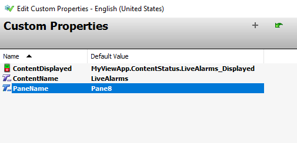
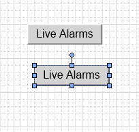
Module 13 – Scripting in Graphics
AVEVA™ Training
36. Click OK to close the Substitute Strings dialog box.
The EmbeddedSymbol1 button on the canvas changes as shown below.
If needed, you can adjust the width of EmbeddedSymbol1 so that the text fits on the
button.
37. Right-click EmbeddedSymbol1 and select Custom Properties.
38. Modify the custom properties as follows:
39. Click OK to close the Edit Custom Properties dialog box.
Name
Default Value
ContentDisplayed
MyViewApp.ContentStatus.HistTrend_Displayed
ContentName
HistoricalTrend
PaneName
Pane8 (default)
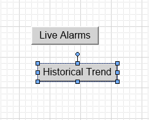
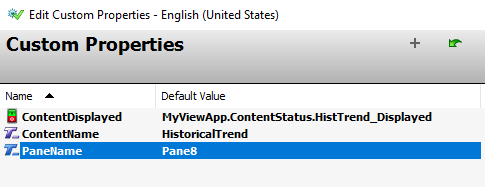
Lab 26 – Using the ShowContent() Function
AVEVA™ Operations Management Interface 2023
40. Duplicate EmbeddedSymbol1 and move the duplicate below EmbeddedSymbol1.
The name of the duplicate symbol is EmbeddedSymbol2.
41. Right-click EmbeddedSymbol2 and select Substitute | Substitute Strings.
42. In the New field, enter Historical Data Grid.
43. Click OK to close the Substitute Strings dialog box.
The EmbeddedSymbol2 button on the canvas changes as shown below.
If needed, adjust the width of EmbeddedSymbol2 so that the text fits on the button.
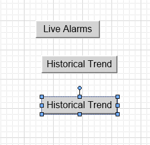
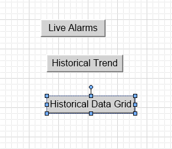
• Width: 160 (highlighted in blue, being edited)
• Height: 30
• Angle: 0
• Transparency: 0
• Locked: False
• Dynamic: True
• Red arrow pointing to Width property row]
Module 13 – Scripting in Graphics
AVEVA™ Training
44. Right-click EmbeddedSymbol2 and select Custom Properties.
45. Modify the custom properties as follows:
46. Click OK to close the Edit Custom Properties dialog box.
47. On the drawing canvas, select all of the embedded symbols.
48. On the Properties pane, change the Appearance \ Width property to 160.
This will ensure a consistent width for all of the buttons in the symbol.
Name
Default Value
ContentDisplayed
MyViewApp.ContentStatus.HistDataGrid_Displayed
ContentName
HistoricalDataGrid
PaneName
Pane8 (default)
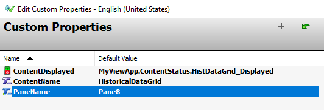
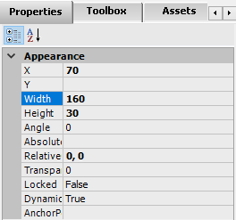
Lab 26 – Using the ShowContent() Function
AVEVA™ Operations Management Interface 2023
49. With all of the embedded symbols selected on the drawing canvas, click the Align Center and
Make Vertical Spacing Equal alignment tools.
The buttons on the canvas should look similar to the following:
50. Click the drawing canvas, and on the Properties tab, change the Graphic \ Size property to
Fixed.
51. Resize the canvas to fit around all of the buttons, leaving some space at the bottom for
another button.
You will add another button to it in the next lab.
You may need to move all of the buttons to reposition them based on the canvas sizing.
Your symbol should look similar to the following:
52. Save and close the AdditionalTools symbol, and check it in.
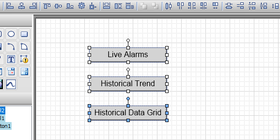
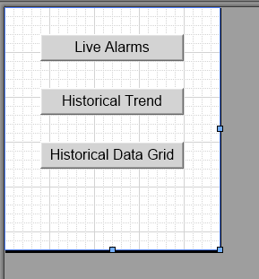
Module 13 – Scripting in Graphics
AVEVA™ Training
Update the Main Layout
In the next steps, you will add a slide-in pane on the right side of the Main layout and assign the
AdditionalTools symbol to it. You will update the slide-in pane so that when it is open, it will not hide
the title bar at the top of the ViewApp.
53. On the Graphics tab, in the Training \ Layouts toolset, double-click the Main layout to open it
in the Layout Editor.
54. On the right side of the layout, click the Add Slide-In Pane button.
A slide-in pane named Pane12 is added on the right.
55. Select Pane12 and click the Add new pane up arrow to add a new pane at the top.
The name of the new pane is Pane13.
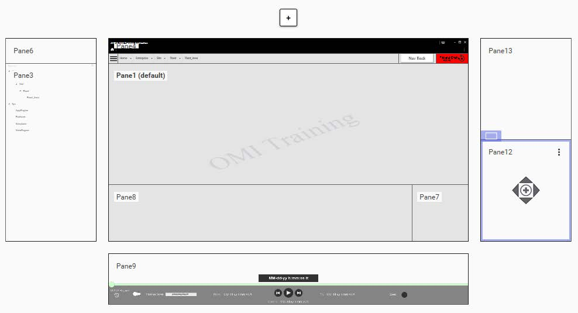
Lab 26 – Using the ShowContent() Function
AVEVA™ Operations Management Interface 2023
56. Select Pane13 and configure its properties as follows:
Size \ Height:
131
Size \ Height Sizing:
Fixed
Size \ Hide Row When Empty:
unchecked
Appearance \ Background:
#00E4E4E4 (transparent)
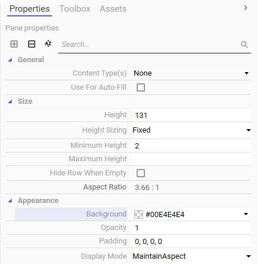
Module 13 – Scripting in Graphics
AVEVA™ Training
57. Select Pane 12 and change its Appearance \ Content Alignment property to Top.
58. On the Toolbox tab, enter a search string to find the AdditionalTools symbol and drag it to
Pane12.
59. Save and close the Main layout, and check it in.
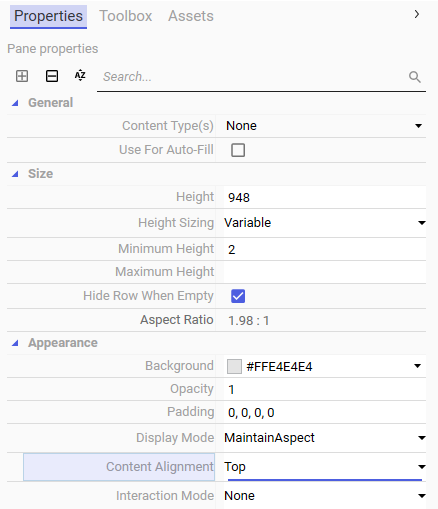
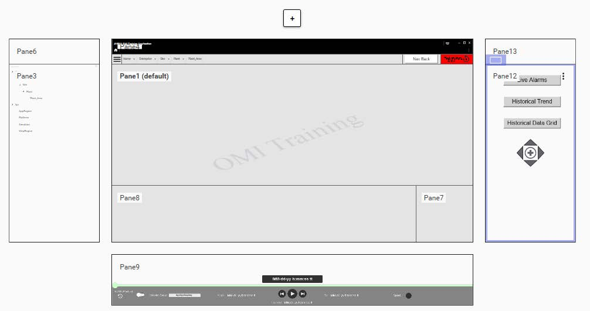
Lab 26 – Using the ShowContent() Function
AVEVA™ Operations Management Interface 2023
Test the ViewApp in a Preview Session
Now you will test the changes in the ViewApp in the preview session. For the purposes of this
example, you will select Plant in the ViewApp Editor first.
60. In the ViewApp Editor, ensure Plant is selected in the Navigation list and click Preview.
The preview session opens, navigated to Plant.
Notice that the LiveAlarms, HistoricalTrend, and HistoricalDataGrid tabs are available in
the bottom-left pane.
Also notice the Add Slide-In Pane button on the right side of the layout.
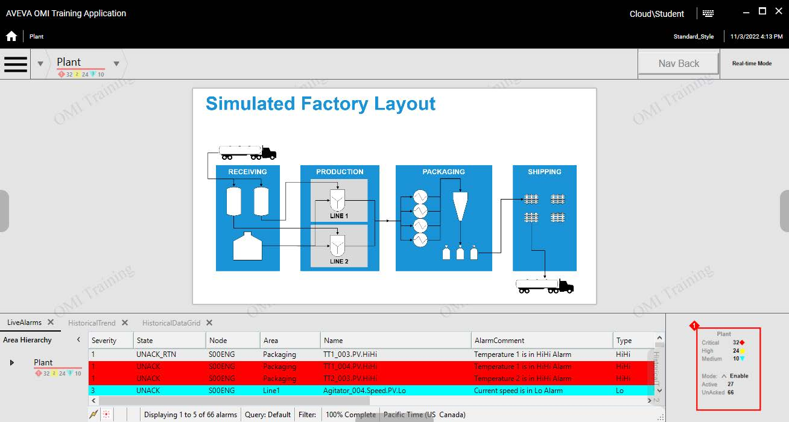
Module 13 – Scripting in Graphics
AVEVA™ Training
61. On the right side of the ViewApp, click the Display Side-In Pane button to show the
AdditionalTools symbol.
When the slide-in pane is open, the title bar still shows because the top pane in the slide-in
pane is transparent.
Notice the buttons in the pane are displayed with a gray background, indicating that the
associated layouts are available in the bottom-left pane.
62. Click the Live Alarms button.
Notice that the LiveAlarms tab closes in the bottom-left pane, and the Live Alarms button is
displayed with a white background because the LiveAlarms layout is not displayed.
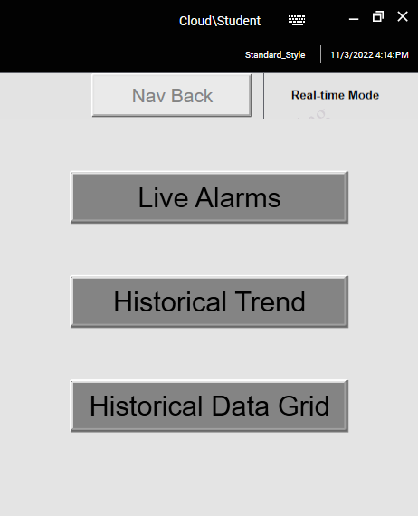
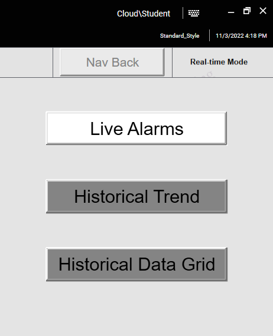
Lab 26 – Using the ShowContent() Function
AVEVA™ Operations Management Interface 2023
63. Click the Live Alarms button again.
Notice that the LiveAlarms tab reappears in the bottom-left pane.
The Live Alarms button is displayed with the gray background again because the
LiveAlarms layout is now displayed.
64. Click the Historical Trend and Historical Data Grid buttons to close and reopen the
HistoricalTrend and HistoricalDataGrid tabs in the bottom-left pane and review the impact to
the buttons.
You can always click Plant in the NavBreadcrumbControl to reload content associated
with it.
65. When you are finished testing, minimize the preview session and the ViewApp Editor.
Module 13 – Scripting in Graphics
AVEVA™ Training
Review above.